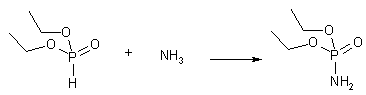

Amphetamine by Amidomercuration of Allylbenzene[ Back to the Chemistry Archive ] IntroductionThis synthesis is a mercuration reaction, where a ionic mercuric salt adds across the double bond of allylbenzene together with a nucleophile (in this case a phosphoramidate), which is followed by reduction by sodium borohydride, whereupon the organic mercury compound is converted to a hydrocarbon and elemental mercury. The resulting diethylphosphoramide of amphetamine is then hydrolyzed to amphetamine with anhydrous hydrogen chloride in benzene. The reaction should be general in scope and work for all allylbenzenes. The major drawback of this procedure is that it uses a stoichiometric amount of mercury nitrate, which is a pretty large amount considering its molecular weight compared to the alkene. Mercury nitrate is very toxic, and the intermediate organomercury compound is even more toxic, as it more easily can be taken up in the body than inorganic mercury salts. After the NaBH4 reduction, the mercury will be in the elemental form, and must be disposed of properly (either by recycling it yourself by making new mercury nitrate from it, or leaving it to a recycling station where they will take care of it so that it won't be released into the environment). It is of utmost importance that the product amphetamine is thoroughly purified, to remove any possible traces of organomercury compounds if the amphetamine is to be ingested. Distillation of the freebase amine followed by recrystallization of the hydrochloride salt is an absolute must for health/safety reasons (even if it is not indicated in the procedure below, which is intended as a general reaction scheme for any alkene, which probably not was intended for consumption in the original article, Synthesis 918 (1982). General Procedure: Diethyl N-AlkylphosphoramidatesA mixture of diethyl phosphoramidate (9.2 g, 60 mmol), dry mercury(II)nitrate (6.67 g, 20 mmol), the alkene (20 mmol), and 1,1-dichloroethane (60 ml) is refluxed gently with stirring for 4 h. The resultant yellow-orange solution is cooled to 0°C and then aqueous 10% sodium hydroxide (60 ml), and a solution of sodium borohydride (0.8 g, 20 mmol) in aqueous 10% sodium hydroxide (20 ml) are added. Stirring is continued for 1 h at room temperature. The precipitated mercury is filtered off and washed with dichloromethane (30 ml). The organic layer is thoroughly washed with water (3x20 ml), dried with magnesium sulfate, and evaporated. The residual crude phosphoramidates mostly are analytically pure when heated at 40-50°C/0.2 torr for 1 h to remove traces of volatile impurities. General Procedure: Hydrolysis of Diethyl N-Alkylphosphoramidates10 mmol of the crude phosphoramidate is left to stand overnight in 30 ml of benzene saturated with dry HCl gas. The benzene and excess HCl is evaporated and the residue is added a solution of 40 g of NaOH in 50 ml of water and the liberated amine is steam-distilled. The distillate is made alkaline (pH 12-14), saturated with solid sodium chloride, and extracted with ether (3 x 50 ml). The extract is dried with magnesium sulfate, saturated with gaseous hydrogen chloride. Evaporation to dryness followed by addition of hexane (10 ml) affords crude amine hydrochlorides [70% yield for amphetamine] which can be recrystallised if necessary. ChemicalsDiethyl phosphoramidate Obtained by bubbling dry NH3 gas through diethyl phosphite (cheap) in CCl4. Ref: J. Chem. Soc. 660 (1945). Mercury(II) Nitrate Commercial mercury(II)nitrate hemihydrate [Hg(NO3)2 * 0.5 H2O], which is strongly hygroscopic and containing varying amounts of water, is ground in a mortar and dried in a vacuum dessiccator over phosphorus pentoxide (P2O5) for several days, and then stored over P2O5 to avoid water being re-absorbed. |